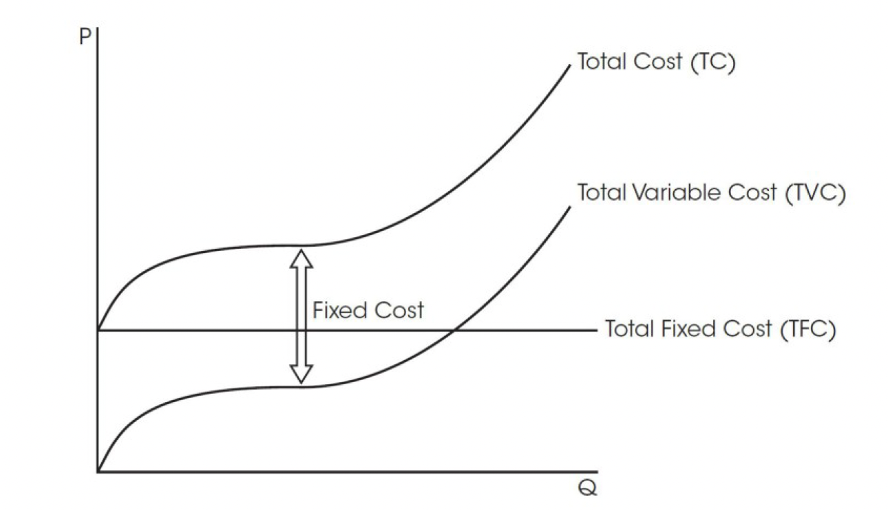

Short-Run Production Costs¶
Short-Run vs. Long-Run
The definitions of short-run and long-run about production costs are different from the duration concepts.
For production costs:
- Short-Run
When at least one production input is fixed and supply cannot fully adjust to changes in demand.
Plant capacity is not changeable.
- Long-Run
When all resources used in production are variable and supply can adjust to changes in demand.
Plant capacity is changeable.
Economic costs¶
Total costs
Total fixed costs (TFC)
Total variable costs (TVC)
Total costs (TC)
TC = TFC + TVC
The figure below shows the relationship between these curves. The difference between the TC and TVC curves is the total fixed cost.
Per unit costs
Average fixed costs (AFC)
Average variable costs (AVC)
Average total cost (ATC)
ATC = AFC + AVCMarginal cost (MC)
Short-Run Costs¶
The figure below shows the relationships between different average costs:
MC
The shape of MC is explained by the law of diminishing returns 👀 within 3 stages.
AFC
Since TFC is constant, the more quantity produced, the lower the average fixed cost. AFC is monotonically decreasing.
AVC
Same reason as MC, but the average variable cost responds slower than MC.
ATC
ATC = AFC + AVC; The distance between the AVC and ATC curves is the average fixed cost. As output increases, the AFC curve will decline. Hence, the difference between the ATC and AVC curves will gradually become smaller as output increases.
When MC is below the average, it pulls the average down.
When MC is above the average, it pulls the average up.
Important
The MC curve intersects both the AVC and ATC at its minimum points.
Remember to show this property. Otherwise, you will lose points on the AP test!
Taxes and Shifting Cost Curves¶
There are 2 types of taxes:
Per-unit taxes
Lump-sum taxes
- Per-unit tax
Tax on each additional unit of output produced.
- Lump-sum tax
Fixed and unchanging tax regardless of the amount a firm produces.
The table below summarizes the effects of the 2 taxes on different costs. The tax will shift the corresponding curves upward.
Types of Taxes |
MC |
ATC |
AVC |
AFC |
|---|---|---|---|---|
Per-unit tax |
✅ |
✅ |
✅ |
|
Lump-sum tax |
✅ |
✅ |